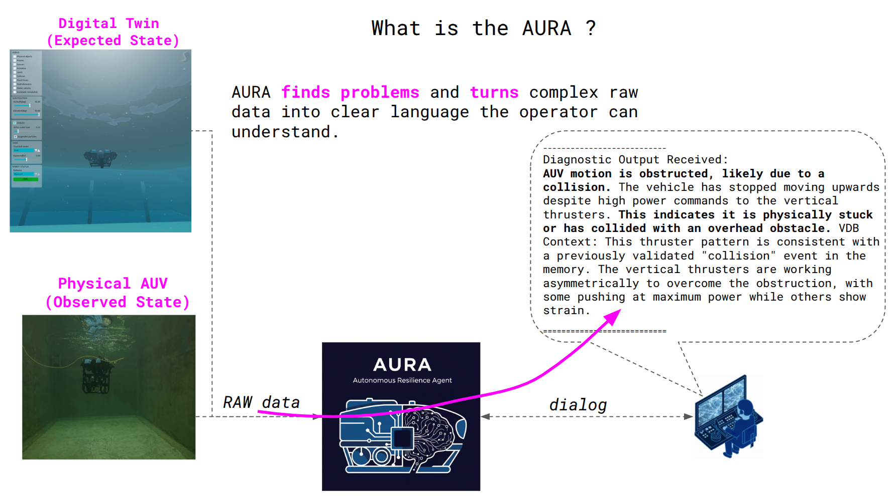

AURA (Autonomous Resilience Agent) is an AI framework I developed to help operators manage underwater vehicles when things go wrong. Using Human-in-the-Loop Distillation, it translates noisy sensor data into clear anomaly hypotheses, works with the operator to diagnose root causes through a natural dialog, and retains that expertise as structured knowledge. Over time, AURA becomes an adaptive, trustworthy partner for resilient human-robot teams — one that learns from each interaction rather than repeating the same diagnostic workflow from scratch.
AURA functions as a distributed cognitive ecosystem for anomaly diagnostics. As shown in the diagram below, its core process is to analyze raw sensor data from the physical AUV (the observed state), compare it against a physics-based Digital Twin (the expected state) to detect discrepancies, and turn those complex signals into a clear, human-understandable diagnostic through a collaborative dialog with the operator. The design intentionally keeps the human in the loop: the agent proposes, the operator confirms or corrects, and the system remembers.

This video provides a narrated walkthrough of the AURA framework for anomaly diagnostics in underwater robotics. It explains how AURA translates complex raw sensor data into clear, actionable problem descriptions for the human operator, and details the architecture that compares the physical AUV (observed state) to its Digital Twin (expected state) to spot anomalies. Crucially, the video shows the collaborative roles of the two AI agents and the Vector Database in a learning cycle that significantly improves diagnostic quality and reduces operator workload after just a single human-AI interaction.
If you use AURA in your research, please cite our paper:
@misc{buchholz2025aura,
title = {A Collaborative Reasoning Framework for Anomaly Diagnostics in Underwater Robotics},
author = {Markus Buchholz and Ignacio Carlucho and Yvan R. Petillot},
year = {2025},
eprint = {2511.03075},
archivePrefix = {arXiv},
primaryClass = {cs.RO},
note = {Accepted to IROS 2026.},
code = {https://github.com/markusbuchholz/aura_underwater},
url = {https://arxiv.org/abs/2511.03075}
}